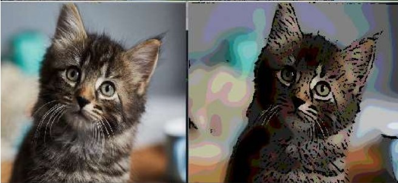
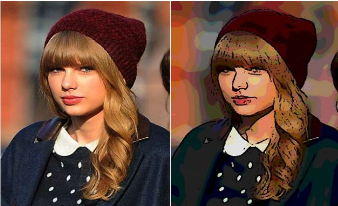

Create cartoonic effect for an image
This is a simple python code which creates a cartoonic effect for your image, which equals one snapchat filter. You may find this effects on several other places online but each one gives a very different result. This one will give a moderate output. Your face will still be fairly recognizable. Below are some sample outputs. Copy the code, install OpenCV, set image input path correctly and you are good to go.

 >
>

Steps for processing the image
Libraries used: Numpy for math operations, Open-Cv for reading and processing images, matplotlib for plotting.Alternatively, you can also use pillow and scikit-learn.
- First the color palette on an image is reduced by applying filters (bilateral filter).Then the image is converted into grayscale to process it.
- Then the noise in the image is removed.
- Image is smoothened by applying some smoothing filter.
- Grayscale image is used to find the outlines of objects in the image, that is, the edges in image are detected.
- The detected images are enhanced and thickened.
- Now the, grayscale image is converted back to the coloured image and is added to the image with reduced colour palette.